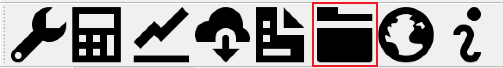
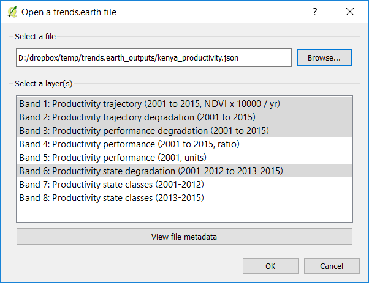
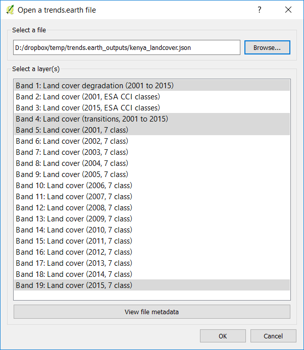

Charger l’outil de données¶
The « Load data » function allows the user to load data into QGIS and LDMS for analysis.
There are two options, to load results of LDMS analysis or to load custom datasets which will be used to compute the indicators.

Load a dataset produced by LDMS¶
This option lets you load already downloaded results from LDMS.
Productivité¶
Utilisez cette fonction pour charger dans la carte QGIS des indicateurs de productivité pré-calculés qui ont été traités pour identifier la dégradation des terres.
Accédez au dossier dans lequel vous avez enregistré le fichier téléchargé et sélectionnez-le. Le fichier téléchargé est un raster à 8 bandes, chaque bande représentant les trois sous-indicateurs (trajectoire, performance et état) ainsi que d’autres informations pouvant vous aider à interpréter les tendances identifiées. Les couches à charger dans les cartes QGIS sont celles qui sont surlignées en gris. Par défaut: trajectoire (dégradation et pente), performance et état. Si vous souhaitez charger les autres couches, sélectionnez-les et cliquez sur OK.
Les couches seront chargées dans la carte QGIS avec sa symbologie correspondante.

Couverture terrestre¶
Cette option vous permet de charger des indicateurs de couverture du sol précalculés qui ont été traités pour identifier la dégradation des terres.
Accédez au dossier dans lequel vous avez enregistré le fichier téléchargé et sélectionnez-le. Le fichier téléchargé est un raster multi-bandes. Le nombre de bandes dépendra de la période d’analyse sélectionnée et de la source de données utilisée. Si la couverture terrestre par défaut de l’ESA CCI était utilisée, par exemple, les cartes annuelles de la couverture terrestre seront téléchargées.
Les bandes dans la pile représentent: la couverture terrestre initiale et finale (annuelle si disponible) à la fois dans le système de classification original et en utilisant le tableau de couverture terrestre des 7 classes de la CNULCD, les transitions de couverture terrestre et la dégradation du couvert terrestre identifiées par ce sous-indicateur. Si vous souhaitez charger les autres couches non sélectionnées par défaut, sélectionnez-les et cliquez sur OK.
Les couches seront chargées dans la carte QGIS avec sa symbologie correspondante.

Carbone organique du sol¶
Cette option vous permet de charger des indicateurs de carbone organique du sol précalculés qui ont été traités pour identifier la dégradation des terres.
Accédez au dossier dans lequel vous avez enregistré le fichier téléchargé et sélectionnez-le. Le fichier téléchargé est un raster multi-bandes. Le nombre de bandes dépendra de la période d’analyse sélectionnée et de la source de données utilisée. Si la couverture terrestre par défaut de l’ESA CCI était utilisée, par exemple, des cartes annuelles de carbone organique du sol seront téléchargées.
Les bandes de la pile représentent: les stocks initial et final de carbone organique du sol (données annuelles sur le COS et les terres si disponibles), les cartes de couverture terrestre initiale et finale utilisant la classification de la couverture terrestre des 7 classes de la CNULCD et la dégradation identifiée par ce sous-indicateur. Les unités de la couche de dégradation sont des «% de changement». Si les changements sont supérieurs à 10% pour la période, ils seront considérés comme une amélioration ou une dégradation selon le signe du changement. Si vous souhaitez charger les autres couches non sélectionnées par défaut, sélectionnez-les et cliquez sur OK.
Les couches seront chargées dans la carte QGIS avec sa symbologie correspondante.
Indicateur ODD 15.3.1¶
Cette option vous permet de charger un sous-indicateur de productivité pré-calculé (intégration de la trajectoire, de la performance et de l’état) ainsi que l’ODD final 15.3.1 (intégration de la productivité, de la couverture terrestre et du carbone organique du sol)
Accédez au dossier dans lequel vous avez enregistré le fichier téléchargé et sélectionnez-le. Le fichier téléchargé est un raster à 2 bandes, le premier contenant des informations sur l’ODD et le second sur le sous-indicateur de productivité pour 5 classes.

Les couches seront chargées dans la carte QGIS avec sa symbologie correspondante.
Charger une série personnalisée de données d’entrée¶
Productivité¶
Use this option to load productivity datasets which have already been generated outside of LDMS.
Les classes de productivité dans les données d’entrée doivent être codées comme suit:
1: En déclin 2: Premiers signes de déclin 3: Stable mais sous stress 4: Stable 5: En hausse 0 ou -32768: Aucune donnée

Couverture terrestre¶
Utilisez cette option pour charger des jeux de données de couverture terrestre qui seront ensuite utilisés pour l’analyse du changement de la couverture terrestre et / ou l’analyse du changement de carbone organique du sol.

Note
Si vous utilisez les données sur la couverture terrestre CORINE, vous pouvez utiliser ce fichier de définition <https://s3.amazonaws.com/trends.earth/sharing/Corine_Land_Cover_to_UNCCD_TrendsEarth_Definition.json>`_ pour pré-charger une agrégation suggérée des classes de couverture terrestre dans CORINE afin de les convertir aux 7 classes de couverture terrestre de la CNULCD.
Carbone organique du sol¶
Le traitement des données personnalisées de carbone organique du sol peut être géré à l'aide de cet outil.
Note
This tool assumes that the units of the raster layer to be imported are Metrics Tons of organic carbon per hectare. If your layer is in different units, please make the necessary conversions before using it in LDMS.